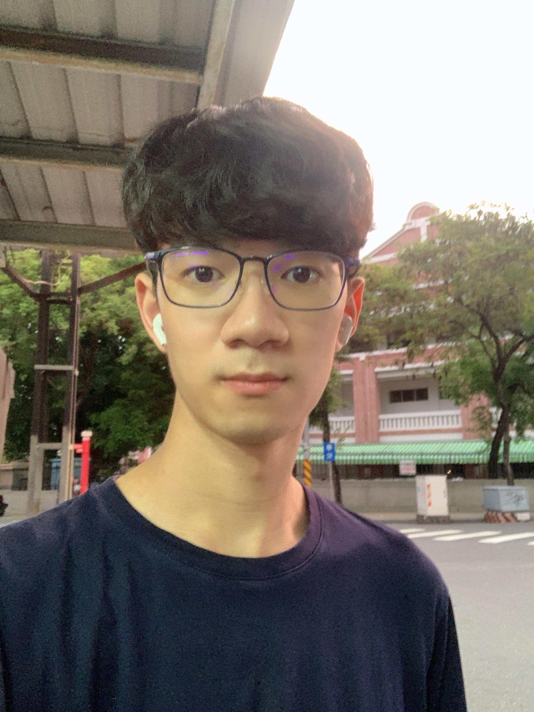

Hsuan-Cheng Wu

I am a PhD student at Pennsylvania State University, Department of Mathematics.
My research interests include but not limited to numerical analysis, optimization,
stochastic modeling and quantum computation.
Education
-
Pennsylvania State Univerisity
Ph.D. in Mathematics, Aug 2023 — Present -
Hong Kong Univerisity of Science and Technology
B.Sc. in Mathematics, Sep 2019 — Jun 2023- First Class Honours
- S.S. Chern Class